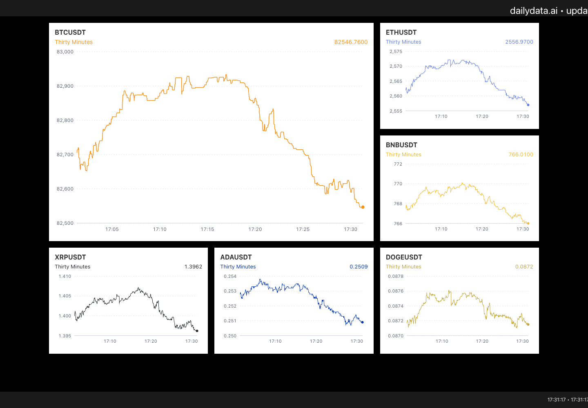

flowchart LR
A[Binance public market data] -->|History and live updates| B[Python data server]
B -->|WebSocket messages| C[React charts in the browser]
Crypto
Session 3 · Part B
Note
This activity runs on your computer and uses live public market data from Binance.
In Part A, Streamlit put Python charts on a web page. Here we use Python to collect data and JavaScript to build the interface. You will run a working crypto dashboard, follow how it is made, and add a control to choose the time window in a chart.
The supplied project gives you a working starting point. Make one change at a time and check its effect in the browser.

1 · Set up the project
Download the crypto dashboard ZIP and extract it. Open the extracted binance_live_charts folder in your code editor.
You need Python 3.12 and Node.js 24 LTS for the setup below. Node.js includes npm, which installs the JavaScript packages. Use the Node.js download page if you have not installed it before. Check your Python installation from the earlier Streamlit activity; Python installers are available from python.org.
You do not need a Binance account, API key or trading account. Binance’s public market data endpoints provide the price history and live updates used here without authentication. You do need an internet connection that can reach Binance.
Open two terminal tabs in the binance_live_charts folder. Both processes must remain running while you use the dashboard.
Terminal 1 · Start Python
The following commands create a separate Python environment, install the two required packages and start the data server.
python3.12 -m venv .venv
.venv/bin/python -m pip install -r requirements.txt
.venv/bin/python backend/server.pyIf your Python 3.12 installation uses the command python3, use that for the first line. Check with python3 --version.
py -3.12 -m venv .venv
.venv\Scripts\python.exe -m pip install -r requirements.txt
.venv\Scripts\python.exe backend\server.pyLeave this terminal open. It should report WebSocket server started on ws://localhost:8000.
Terminal 2 · Start React
cd frontend
npm ci
npm startnpm ci installs the package versions recorded in the supplied lock file. It is needed on the first run; you can use just npm start on later runs.
Open http://localhost:3000 if it does not open automatically. Allow about a minute for the history to load. The charts appear progressively; live updates begin after the initial downloads finish. Keep this browser tab open as you work on the files.
Check: you should see BTCUSDT, ETHUSDT, BNBUSDT, XRPUSDT, ADAUSDT and DOGEUSDT. Hover over a chart to inspect values. Watch how the time windows and the coin in the large panel change automatically.
To stop the app, press Ctrl+C in each terminal. On a later run, start the Python server and run npm start in frontend again; you do not need to recreate the environment or reinstall the packages.
2 · See how the pieces fit together
The dashboard has three main steps:
The Python server asks Binance for earlier prices, then listens for updates. A WebSocket keeps a connection open so new values can arrive without the browser repeatedly reloading the page. React stores those values and redraws the relevant parts of the interface.
The two Python packages are aiohttp, for the history requests, and websockets, for the continuing connections. In the browser, React manages the interface and Recharts draws the charts. npm installs the JavaScript packages declared in frontend/package.json.
| File | What you make or change there |
|---|---|
backend/server.py |
Requests price history, listens to Binance and sends data to the browser. |
frontend/src/config/config.json |
Chooses currencies, colours, time windows and rotation timings. |
frontend/src/App.js |
Receives the data and arranges the six chart panels. |
frontend/src/ChartPanel.js |
Builds one chart, including its axes, tooltip and time window. |
frontend/src/App.css |
Sizes the panels and controls how the layout adapts to screen width. |
frontend/src/Tickers.js |
Builds the moving strips above and below the charts. |
3 · Start with the data
BTCUSDT is a trading pair: the price of one bitcoin measured in USDT. The other pairs also use USDT. Keep that unit in mind when reading the prices.
The data come in time intervals. Each interval contains an opening price, a high, a low, a closing or latest price, and a traded volume. These records are often called candles, even when we display them as lines.
The interval is different from the total span shown by a chart:
| Configuration key | One record covers | Window shown in the supplied app |
|---|---|---|
1s |
One second | Thirty Minutes |
1m |
One minute | Three Hours |
5m |
Five minutes | Three Days |
30m |
Thirty minutes | Three Weeks |
4h |
Four hours | Three Months |
1d |
One day | Three Years |
Open this example history request in another browser tab. It requests two one-minute records for BTCUSDT. The response is JSON: text containing arrays of values. The values will depend on when you make the request.
In backend/server.py, find the block beginning transformed_data =. The server turns each Binance record into named fields:
{
"time": entry[6],
"open": float(entry[1]),
"high": float(entry[2]),
"low": float(entry[3]),
"price": float(entry[4]),
"volume": float(entry[5]),
}time is the interval’s closing timestamp, in milliseconds. float() converts price text into numbers that a chart can use. The most recent interval can still be in progress, so its latest price, high and low can change.
The server sends messages labelled historical for the initial series and update for incoming changes. Each message also identifies the currency and interval, so the browser knows which series it belongs to.
4 · Put changing data into React
Open frontend/src/App.js. This line opens the connection to your Python server:
socket = new WebSocket('ws://localhost:8000');localhost means your own computer. The browser receives each message in the socket.onmessage function. JSON.parse(event.data) turns the message text into a JavaScript object.
Near the top of App, find:
const [data, setData] = useState(null);data holds the current series. setData changes that stored value and tells React to update the display. This stored information is called state. See React’s explanation of state if this is new to you.
Follow the two branches in socket.onmessage. A historical message supplies the starting series. An update message replaces a record with the same timestamp, or adds a new record when the next interval starts. Replacing the current record matters: otherwise every update would become an extra point for the same time.
Further down, App uses ChartPanel repeatedly, passing each instance a currency and its data. A component is a reusable piece of interface: one chart definition can make all six panels. React’s component introduction explains this pattern.
5 · Make a chart from the series
Open frontend/src/ChartPanel.js. currentInterval chooses the series to use. The chartData block orders the points by time and maps price to a field called close for the chart.
Inside LineChart, find the three Line elements. Their dataKey values choose the values to draw:
highandlowmake the two faint lines.closemakes the stronger line.
XAxis uses time; YAxis uses the price values. Tooltip supplies the details that appear when you hover. These are components from Recharts.
The horizontal axis places a small number of labels at time boundaries. The price axis uses enough decimal places to distinguish nearby values. This is especially useful for a currency whose price is below one USDT.
Each panel adjusts its own price scale. A steep-looking line in one panel does not necessarily mean a larger price change than a gentler line in another. Check the axes and time windows before comparing the shapes.
Try a chart change: change strokeWidth={isLarge ? 1.5 : 1} on the close line to strokeWidth={2}. Save the file and look at the browser. Compare the visibility of the main line with the faint high and low lines.
6 · Make the panels fit the charts
Open frontend/src/App.css. .chart-grid creates the columns. .large-chart spans two columns and two rows on a wide screen; the other panels occupy one cell each.
Inside each panel, flex layout gives the title and time-window row the space they need, then gives the chart the remaining height. ResponsiveContainer in ChartPanel.js follows that available size. This avoids a small, fixed-height chart sitting inside a much taller white panel.
Media queries change the arrangement when the screen becomes narrower. Resize the browser and watch the columns change.
Try a layout change: find .small-chart and change aspect-ratio: 3 / 2 to aspect-ratio: 4 / 3. The smaller panels become taller. Compare the readability of the lines and axes at both settings, then choose the proportions you prefer.
You can also change one colour in frontend/src/config/config.json. Keep the JSON punctuation intact: keys and colour values use double quotes, and entries are separated by commas. React reloads after a saved edit. If you change the currencies or history lengths, restart the Python server as well; it reads the configuration when it starts.
7 · Add a time-window selector
The supplied charts cycle through time windows automatically. That helps someone watching the dashboard, but makes it harder to stay with a comparison. Let’s let the reader choose a window and keep it on screen.
Make a spare copy of ChartPanel.js before starting. You will make three changes in that file and one small CSS addition.
Remember whether the time window is automatic
Immediately after the line that creates currentInterval, add:
const [autoTime, setAutoTime] = useState(true);Stop the timer after a manual choice
Find the effect under the comment // Hook to switch intervals at random intervals. In that effect, replace:
if (!dataLoaded) return;with:
if (!dataLoaded || !autoTime) return;At the end of that same effect, change its dependency list from [order, dataLoaded] to [order, dataLoaded, autoTime].
The effect already clears its old timer when it reruns. Including autoTime means a manual choice also stops that timer.
Replace the time-window label with a dropdown
Find const headerContent = (. Inside it, replace the first <span>...</span> block—the one containing {frequencies[currentInterval].display}—with:
<select
className="time-window-select"
aria-label={`${symbol}: time window`}
value={currentInterval}
onChange={event => {
setAutoTime(false);
setCurrentInterval(event.target.value);
}}
>
{order.map(interval => (
<option key={interval} value={interval}>
{frequencies[interval].display}
</option>
))}
</select>Keep the second span: it displays the latest price.
order.map(...) makes one option for each configured interval. Choosing an option changes currentInterval and turns off automatic switching for that chart component. The incoming market data keep updating.
Add this to the end of App.css:
.time-window-select {
max-width: 60%;
min-width: 0;
padding: 2px 4px;
font: inherit;
}Check your change: choose Three Days in the large panel. Wait at least 15 seconds. It should stay on that time window while the data continue to update. The currency in the large panel will still rotate; that is a separate timer in App.js. Refreshing the page starts automatic time switching again.
8 · Develop your version
Choose another change that helps a reader answer a question. For example:
- Add a way to pause the currency rotation as well as the time-window rotation.
- Put all panels on the same time window for a more direct comparison.
- Change the grid so all six currencies have equal prominence.
- Add a percentage-change view and explain the starting value it uses.
Keep a screenshot of your modified dashboard, your changed files, and a short explanation of what your change makes easier to see. Check the result at a wide and a narrow browser width.
This activity runs locally. Sharing a localhost link will not let someone else use your app. Putting this version online would require a host for the Python service as well as the React frontend, and a public WebSocket address.
If something does not start
| What you see | What to check |
|---|---|
npm is not recognised |
Install Node.js, then reopen the terminal. |
Python cannot find aiohttp or websockets |
Use the .venv Python command shown above for both installation and starting the server. |
WebSocket: disconnected |
Keep the Python server running in Terminal 1 on port 8000. |
A chart stays on Loading... |
Allow the initial downloads to finish. Check Terminal 1 for a Binance request error; restore the connection, then refresh the browser. An API key is not required. |
| A port is already in use | Stop the earlier copy of this app with Ctrl+C, then start it again. |
| A saved edit causes a red error screen | Read the file and line number in Terminal 2; check brackets, commas and quotation marks around your edit. |
Continue to Part C · Tableau 1.